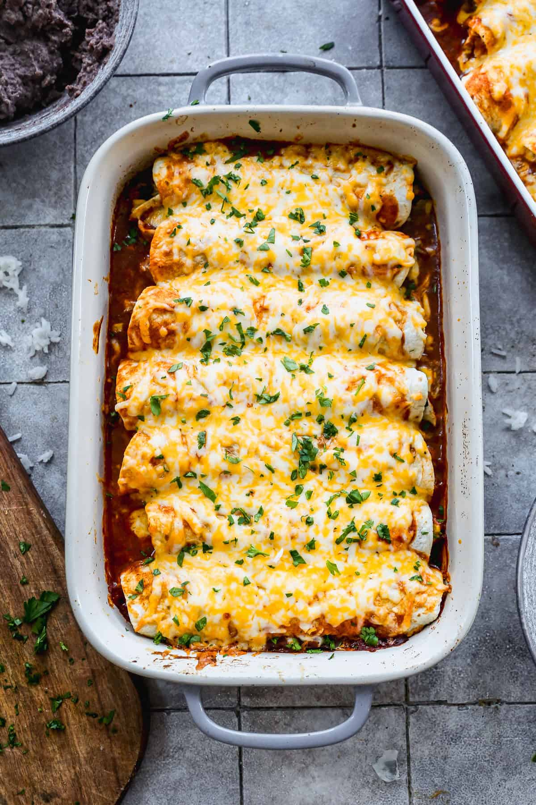

Enchiladas
30 mins
Mexican | Vegetarian
A traditional Mexican dish consisting of rolled tortillas filled with various ingredients and topped with a savory sauce.
Serves 4-6 people
Ingredients
- 2 tbsp of butter
- 4 tbsp of flour
- 1 can of tomato paste
- 900ml of vegetable stock
- Onion powder
- Garlic powder
- Cumin powder
- Chili powder
- Oregano
- Salt and pepper to taste
- 1 can of black beans
- 2-3 handfuls of corn
- 2 diced zucchinis
- 1 bell pepper
- 1 shredded carrot
- Any type of cheese
For the Enchilada Sauce:
For the Enchiladas:
Instructions
- Add 2 tbsp of butter in a pan
- Add 4 tbsp of flour
- Let it cook for 1-2 minutes
- Add your spices: Onion powder, garlic powder, cumin powder, chili and oregano
- Add 1 full can of tomato paste
- Add 900ml of vegetable stock
- Let it cook for 5-10 minutes and add some salt
- Add additional spices as per taste
- Let it simmer for 5 minutes
- In a bowl, add 1 can of black beans, 2-3 handfuls of corn, 2 diced zucchinis, 1 pepper and 1 shredded carrot
- Lightly coat the tortillas in the sauce
- Assemble the tortillas with the mix of veggies and cheese
- Place each tortilla in an over safe tray
- Add all the remaining sauce in the tray, coat generously
- Top it off with some cheese
- Bake in the oven 425 for 25 minutes
- Enjoy meal